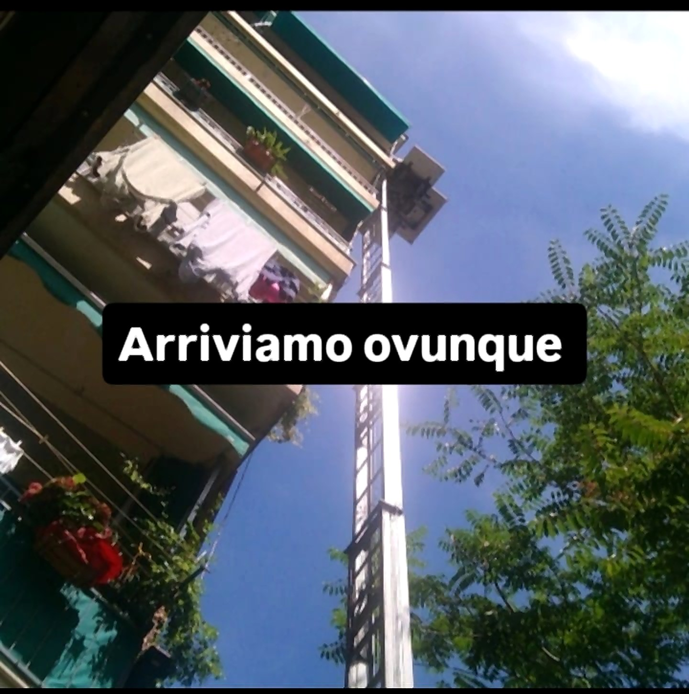
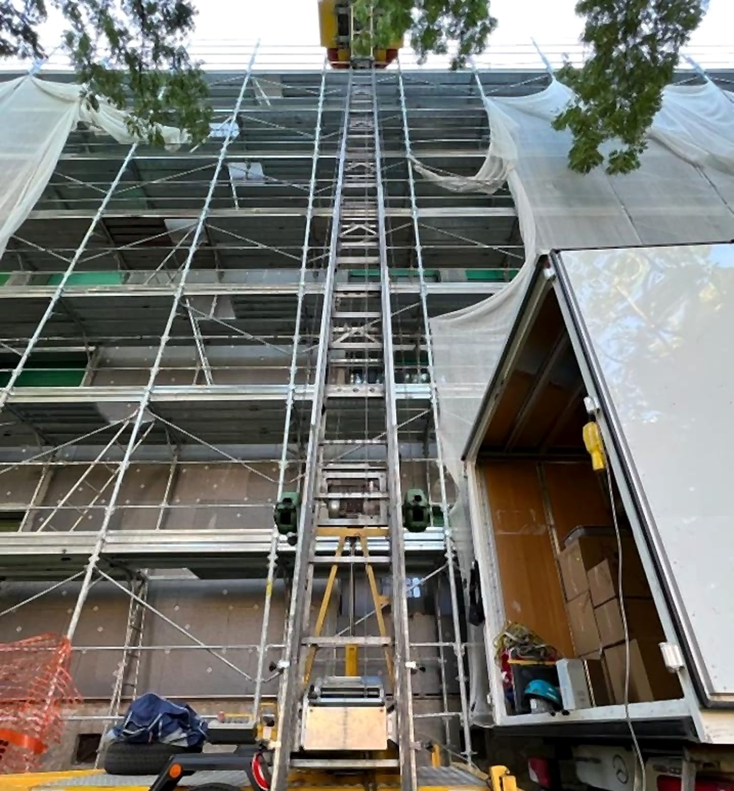
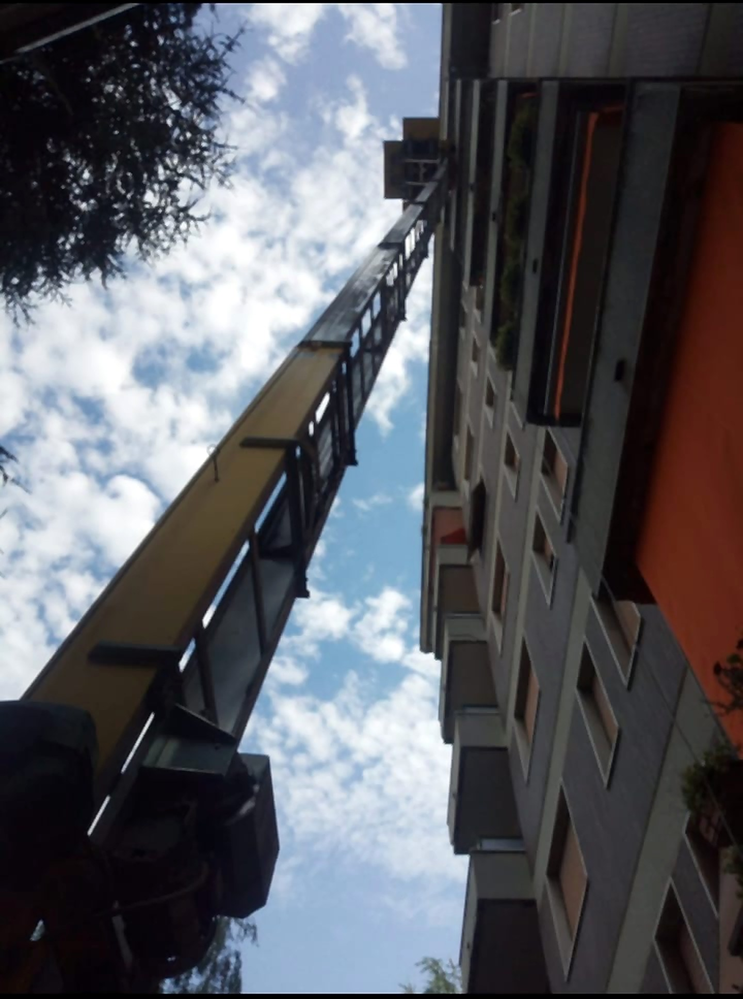
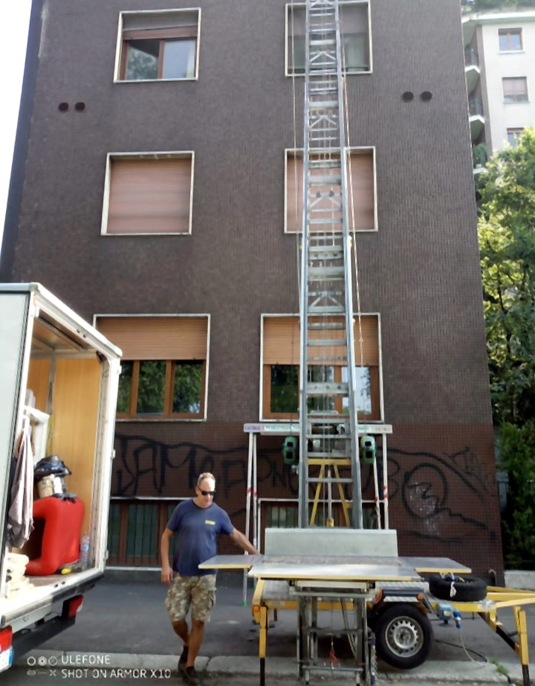
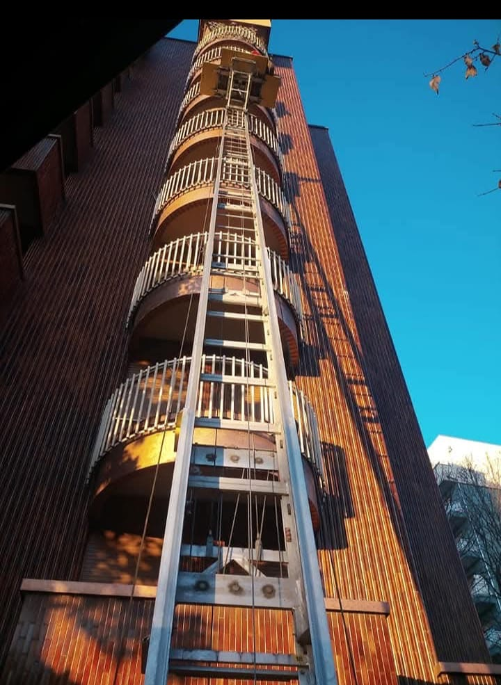

Il nostro punto forte
Autoscala a Milano fino a 65 metri
Per i piani alti, le scale strette e gli arredi voluminosi: i mobili passano da finestra o balcone.
Autoscala fino a 65 metri
Disponiamo di un'autoscala che arriva fino a 65 metri. I mobili e gli oggetti ingombranti vengono caricati o calati dall'esterno, da una finestra o da un balcone, senza dover passare da scale e ascensore.
L'uso dell'autoscala si valuta caso per caso, in base all'edificio, agli accessi e allo spazio disponibile per il mezzo.




Quando è utile
- piani alti, soprattutto senza ascensore o con ascensore piccolo;
- scale strette o a chiocciola;
- divani, armadi e cucine che non passano dal vano scale;
- elettrodomestici e oggetti pesanti;
- qualsiasi oggetto voluminoso difficile da portare a mano.
Prima dell'intervento
Per valutare se l'autoscala è la soluzione giusta ci servono:
- l'indirizzo e il piano;
- se c'è un balcone o una finestra accessibile;
- lo spazio disponibile davanti all'edificio per il mezzo;
- il tipo di mobili da spostare.
Il modo più semplice: mandaci qualche foto su WhatsApp, con l'indirizzo.
Come funziona
L'autoscala, passo dopo passo
Il principio è semplice: invece di far passare i mobili da scale e ascensore, li si porta fuori dall'edificio, lungo la scala che sale fino a una finestra o a un balcone.
- ValutazioneCon indirizzo, piano e foto capiamo se l'autoscala è adatta all'edificio.
- PosizionamentoIl mezzo si posiziona davanti all'edificio, nello spazio disponibile.
- Carico dall'esternoI mobili escono dalla finestra o dal balcone e scendono in sicurezza.
- TrasportoUna volta a terra, vengono caricati sul mezzo.
- ConsegnaAll'arrivo, se serve, la stessa soluzione si usa per salire.
Il confronto
Autoscala o scale e ascensore?
Non è sempre necessario usare l'autoscala. Questa tabella aiuta a capire quando conviene.
| Situazione | Scale o ascensore | Autoscala |
|---|---|---|
| Piani bassi, ascensore capiente | Di solito sufficiente | Raramente necessaria |
| Piani alti, senza ascensore | Lungo e faticoso | Spesso la soluzione migliore |
| Ascensore piccolo o scale strette | I mobili grandi possono non passare | Evita di smontare o forzare i mobili |
| Mobili pesanti o ingombranti | Rischio per mobili e palazzo | Movimentazione dall'esterno |
| Accesso al mezzo difficile | Dipende dalla strada | Serve spazio per posizionarlo: va verificato |
Quando conviene
Mobili che non passano dalle scale
Il caso classico è quello di un divano, un armadio o una cucina che non riescono a girare in un vano scale stretto. Smontare non sempre basta, e forzare il passaggio rischia di danneggiare i mobili e le pareti.
Con l'autoscala l'oggetto esce da una finestra o da un balcone, si evita l'interno del palazzo e il lavoro si riduce nei tempi e nei rischi.

Cosa serve
Cosa verifichiamo prima dell'intervento
L'autoscala è un mezzo ingombrante: prima di usarla controlliamo alcune condizioni. Per questo, quando ci scrivi, ci servono pochi dati precisi.
- Spazio per il mezzo: larghezza della strada, marciapiede, alberi e cavi nelle vicinanze;
- Punto di accesso: un balcone o una finestra abbastanza grande per far passare i mobili;
- Posizione: distanza e altezza dal punto in cui si posiziona il mezzo;
- Suolo pubblico: se il mezzo deve occupare la strada, si verifica se servono autorizzazioni, e come ottenerle;
- Cosa si sposta: dimensioni e peso dei mobili, per valutare come movimentarli.
Foto utili
Cosa fotografare per il preventivo
Il modo più rapido per una valutazione è mandarci qualche foto su WhatsApp. Ci aiutano a capire se l'autoscala è fattibile, senza un sopralluogo immediato.
- l'edificio visto dalla strada, con il punto dove si posizionerebbe il mezzo;
- il balcone o la finestra da cui passerebbero i mobili;
- la strada o il cortile, per vedere l'ingombro;
- i mobili più grandi che devono essere spostati.
Domande frequenti
Le risposte alle domande più comuni
Non trovi la tua? Chiamaci o scrivici su WhatsApp.
Come faccio a sapere se serve l'autoscala?
Mandaci l'indirizzo, il piano e qualche foto: ti diciamo se conviene e come procedere.
Serve spazio davanti al palazzo?
Sì, il mezzo ha bisogno di spazio per posizionarsi. Lo verifichiamo insieme in fase di valutazione.
Fino a che altezza arriva l'autoscala?
Fino a 65 metri.
Può servire un permesso per occupare la strada?
Se il mezzo deve occupare suolo pubblico, può essere necessario un permesso. Lo verifichiamo insieme in fase di valutazione, in base al luogo.
Si possono spostare anche pianoforti o mobili molto pesanti?
Dipende da peso, dimensioni e dall'edificio. Descrivici cosa devi spostare e valutiamo il caso.
Si usa solo per salire o anche per scendere?
Per entrambe le operazioni: i mobili possono essere calati dall'appartamento o sollevati verso la nuova abitazione.
Posso avere un preventivo solo per l'autoscala?
Sì, puoi richiederci l'autoscala come servizio singolo oppure all'interno di un trasloco completo.
Hai un trasloco ai piani alti?
Chiamaci o scrivici: ti rispondiamo entro un giorno lavorativo.